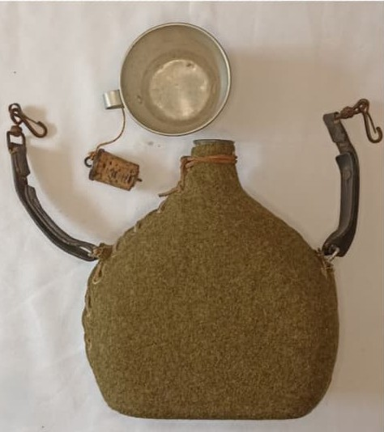

La gourde française modèle 1935–1940 est un équipement essentiel du fantassin durant la campagne de 1939–1940. Légère, robuste et simple, elle accompagne les soldats de l’armée française ainsi que certaines unités de la France Libre.
La gourde WW2 est une évolution des modèles antérieurs, mais la version distribuée durant la mobilisation de 1939–1940 possède systématiquement une housse en toile kaki ou marron. Les housses bleu marine appartiennent à des dotations plus anciennes (WW1 ou entre-deux-guerres) et ne représentent pas le modèle standard de 1940.